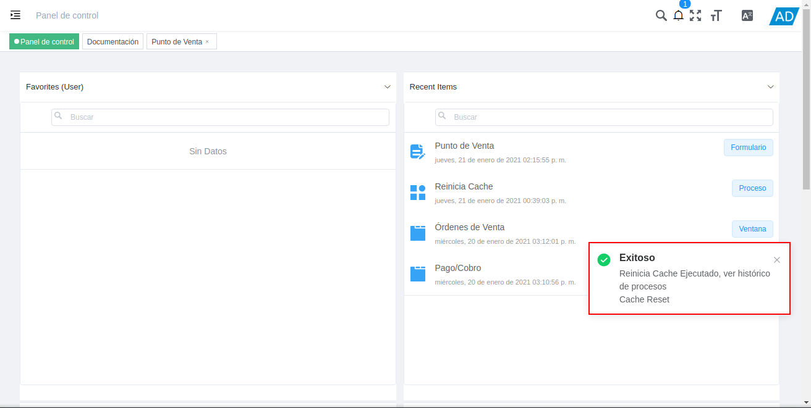
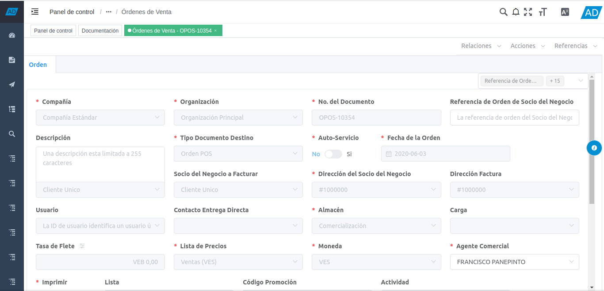

1.5. Utilería¶
En ADempiere la utilería no es más que un conjunto de instrumentos o herramientas que tienen algún tipo de utilidad, es decir, que sirven para un fin en específico, a continuación se definen cada uno de ellos.
1.5.1. Buscardor¶
Le permitirá realizar una búsqueda de un documento en específico.
Imagen 1. Buscar

1.5.2. Reinicia Cache¶
Permitirá cerrar todas las ventanas. Para reiniciar cache ingrese reinicia caché en el buscador rápido explicado anteriormente y reinicie.
Imagen 2. Reiniciar Cache
Podrá visualizar la ventana “Reinicia Cache”, donde debe posicionarse sobre la opción “Acciones”, y seleccionar la opción “Ejecutar”.
Imagen 3. Ejecutar Reinicia Cache
Al culminar el proceso de reinicio de cache, podrá visualizar el siguiente mensaje de confirmación

Imagen 4. Reinicio Exitoso del Cache


1.5.3. Manejo de Notas¶
Permite agregar notas a los registros de las ventanas. Para acceder a la opción de notas de un registro, debe realizar el siguiente procedimiento.
Ubique el registro al que requiere agregar la nota.

Imagen 5. Registro para Agregar Nota
Seleccione el icono “i”, ubicado en la parte derecha de la ventana en la que se encuentra.
Imagen 6. Icono i
Podrá visualizar la opción “Notas”, donde puede ingresar la nota que requiere y luego seleccionar la opción “OK”.
Imagen 7. Ingresar Nota y Opción OK

1.5.4. Bitácora de Cambios¶
Guarda todos los cambios realizados en los registros de las ventanas, indicando el socio del negocio que realizó el cambio, el campo que fue modificado con su valor anterior y su valor actual, la fecha y la hora exacta en la que el mismo fue realizado. Para acceder a la bitácora de cambios de un registro, debe realizar el siguiente procedimiento.
Ubique el registro al que requiere consultarle la bitácora.
Imagen 8. Registro para Consultar Bitácora
Seleccione el icono “i”, ubicado en la parte derecha de la ventana en la que se encuentra.
Imagen 9. Icono i
Seleccione la opción “Actividad”, para visualizar los cambios realizados en el registro ubicado previamente.
Imagen 10. Opción Actividad